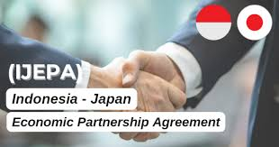
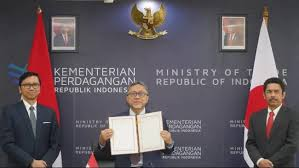
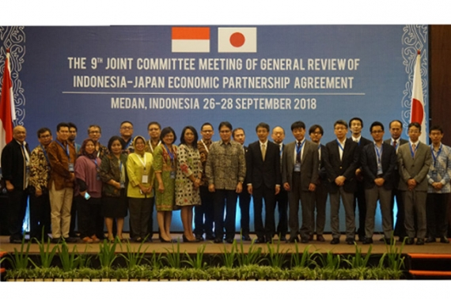
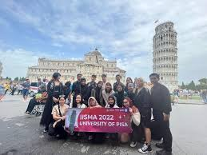
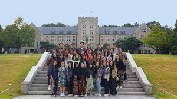
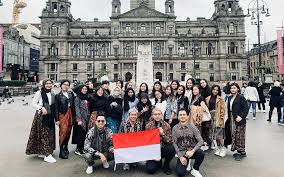
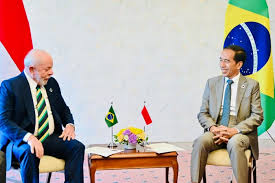
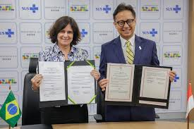
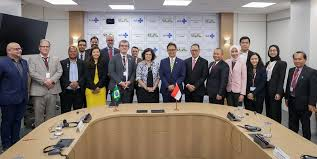

GALERI









KERJA SAMA BILATERAL
PENGERTIAN KERJA SAMA BILATERAL
Kerja sama bilateral adalah kerja sama yang dilakukan oleh dua negara yang memiliki hubungan diplomatik. Di balik adanya kerja sama bilateral, terdapat hal-hal yang melatarbelakangi kerja sama tersebut. Hal-hal tersebut seperti kepentingan nasional yang berbeda, perdamaian di kawasan, kesejahteraan ekonomi nasional, perbedaan sumber daya alam, perbedaan ilmu pengetahuan dan teknologi dan juga perbedaan ideologi. Kerja sama ini bertujuan untuk membina hubungan dan bekerjasama dalam berbagai bidang guna menguntungkan kedua belah pihak. Kerja sama bilateral dikelompokkan ke dalam berbagai bidang, yaitu kerja sama di bidang politik, ekonomi, pendidikan, sosial budaya, pariwisata, pertahanan, kesehatan, keagamaan, hukum, lingkungan, dll. Berikut ini adalah bentuk kerja sama bilateral di Indonesia :
BENTUK KERJA SAMA BILATERAL INDONESIA
Dalam bidang ekonomi : IJEPA / Indonesia-Japan Economic Partnership Agreement adalah suatu bentuk kerja sama bilateral antara negara Indonesia dengan Jepang. Kerja sama ini melalui tahap awal pada 23 Juni 2003 di Tokyo dan diresmikan pada 1 Juli 2008. Tujuan dari IJEPA adalah meningkatkan perdagangan dan investasi Indonesia dan Jepang, serta pasar regional melalui 3 pilar utama yakni liberalisasi, fasilitasi dan peningkatan kapasitas (capacity building)
Dalam bidang pendidikan : Indonesia mengadakan kerja sama bilateral dalam bidang pendidikan dengan Belanda. Salah satu program kerja sama yang diadakan Indonesia Belanda adalah program International Student Mobility Awards (IISMA) atau program pertukaran mahasiswa internasional. Dalam hal ini Kemendikbudristek mengajak perguruan tinggi terbaik di Belanda untuk membuka kampus di Indonesia agar Indonesia mendapatkan kualitas pendidikan tinggi. Dalam kerja sama ini, kedua negara ini pernah melakukan matchmaking session dimana ini adalah sesi pertemuan antara Perguruan Tinggi Indonesia dengan Belanda. Saat itu, kedua Menteri ini juga sempat menyaksikan Penandatanganan Pengaturan Internasional (International Arrangement) antara Direktorat Jenderal Pendidikan Tinggi, Riset, dan Teknologi Kemendikbudristek dengan Dewan Penelitian Ilmiah Belanda.
Dalam bidang kesehatan : Indonesia mengadakan kerja sama bilateral dalam bidang kesehatan dengan Brazil. Menteri Kesehatan Republik Indonesia dengan Menteri Kesehatan Brazil menandatangani Memorandum of Understanding (MoU) bidang kesehatan periode 2024-2027 pada 7 Februari 2024 di Brazil. Pemerintah RI dan Brazil akan mendorong pengembangan kerja sama pada bidang pelayanan kesehatan, ketahanan kesehatan yang meliputi kedaruratan kesehatan masyarakat, keamanan dan keandalan dalam kefarmasian dan alat kesehatan, pengembangan SDM kesehatan, teknologi kesehatan termasuk bioteknologi dan bidang-bidang kerja sama lain yang disepakati bersama secara tertulis.
TATA CARA MEMBANGUN PERJANJIAN INTERNASIONAL
Berdasarkan Undang Undang No 24 Tahun 2000, tahapan membangun perjanjian internasional sebagai berikut:
Penjajakan → Tahap awal, kedua belah pihak berunding mengenai kemungkinan dibuatnya suatu perjanjian internasional.
Perundingan → Tahap kedua, membahas substansi dan masalah-masalah teknis dalam perjanjian internasional.
Penerimaan → Tahap ketiga, menerima naskah perjanjian yang telah dirumuskan dan disepakati oleh kedua belah pihak.
Penandatanganan → Tahap terakhir, mendelegasi naskah perjanjian internasional yang telah disepakati oleh kedua pihak.
MANFAAT KERJA SAMA BILATERAL
Secara umum, manfaat kerja sama bilateral adalah sebagai berikut:
Sebagai perlindungan warga negara
Sebagai perundingan perbatasan
Sebagai peningkatan ekonomi
Sebagai pertukaran pelajar dan mahasiswa
Sebagai daya saing bangsa
Sebagai peningkatan hubungan antar negara